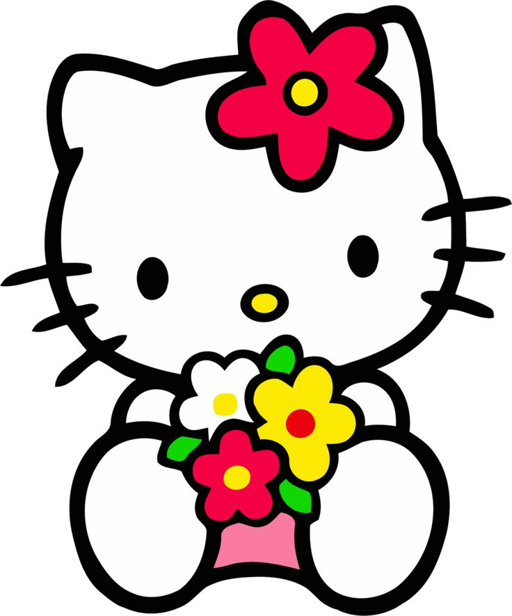

The revelation comes from Sanrio, the creators of the international
toy, who contacted University of Hawaii anthropologist Christine R. Yano
who was putting together a 40th anniversary retrospective
of Hello Kitty in Los Angeles.

| HK made her debut in 1974 | HK became available in the States in 1976 |
|---|---|
| HK has no mouth, the reason, according to Sanrio | Her full name is actually "Kitty White." |
| She's a Japanese bobtail cat | Her birthday is November 1st, making her a Scorpio |

|

|